圖示物品名特殊效果取得方式
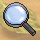 放大鏡在木偶山山腳縮小地圖使用，就可以回到木偶山山腳向女巫以 500 可因購得
( 木偶山山腳縮小版 )
縮小鏡在木偶山山腳右下罐頭處使用，可縮小到罐頭地道向女巫以 500 可因購得
( 木偶山山腳 )
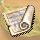 破舊的地圖在沉睡湖最下方使用進入沉睡村任務取得 ( 北綠野 )
 破除結界的鏡子使用可以解除水晶山結界進入迷宮打藍喵喵 or 高等怪
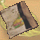 陰暗山洞地圖野天鵝任務物品，在青鳥城外 ( 6,372 ) 使用可進入山洞任務取得 ( 青鳥城 )
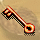 鍍金的鑰匙在陰暗山洞第一區的門使用可進入第二區陰暗山洞第一區
打怪隨機掉落
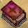 神秘的魔法書在陰暗山洞第二區 ( 9,181 ) 使用可進入最後一區陰暗山洞第二區
打怪隨機掉落
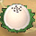 美味麻薯在藍喵迷宮使用後進入藍貓島打藍喵喵月光村打登山雪怪
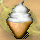 香草冰淇淋在龍窟使用進入二樓龍窟B1打水貓鷹
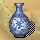 怪味道的香水對門之迷宮B2右邊的門使用可通過進入裡面點門之迷宮B2右下白桌子
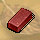 巧克力派在羅比特草原左下使用後進入莫名其妙花園羅比特草原打怪隨機掉落
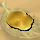 青蟲的麵包在莫名其妙花叢下方傳送處使用可到達北貓咪森林莫名其妙花叢打啃木蟲
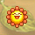 小菊花徽章可以免費由羅比特草原右下方傳點傳送到北貓咪森林| 莫名其妙花叢下方打 Lv 70 金盞菊魔王 ( NPC )
|  不知用途的鑰匙| 可以用來開啟大盜巢穴B1的寶箱，鑰匙可無限由B2後段打幻獸隨機取得(應該是有土系天使那邊打的)，不過要打鑰匙一定要先解完愛耍小聰明的寶藏之門這任務，不然怎麼打都打不到鑰匙 | 大盜巢穴B2打怪隨機掉落
| | | | | | | | | | | | | | | | | | | | | | | | | | | | | | | | | | | | | | | | | | | | | | | | | | | | | | | | | |